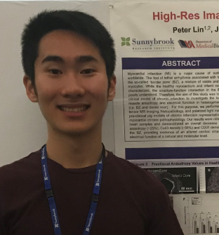
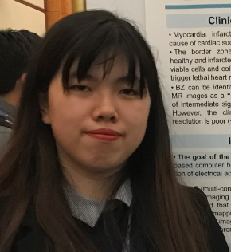
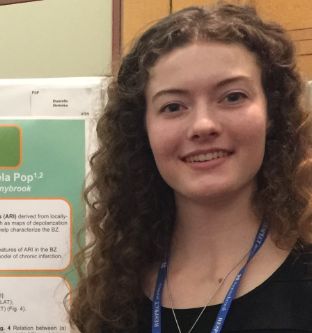

ALUMNI
| Terenz Escartin Research Assistant (2019-2020) Project area: Interventional imaging Title: X-ray guided EP interventions (mapping/ablation) and fusion with MR images MSc in Medical Biophysics (Univ. Western Ontario) BSc - Michener Institute / UofT, Radiological Imaging |
|
|  | Peter Lin Research Assistant, MBP summer student (May-Aug 2018, and 2019) Project area: Fibrosis characterization using high resolution imaging BSc - Human Biology, UofT UROP MBP Summer Research Award Award: 1st prize winner - MBP summer student poster competition [link] Award: Honorable mention - Imaging Network Ontario Symposium 2020 [link] |
|  | Mengyuan (Melody) Li Research Assistant (2019), MBP summer student (May-Aug 2018, and 2017) Project area: MR image segmentation, construction of 3D heart models Undergraduate student - Engineering Science, UofT UROP MBP Summer Research Award Excellence award: Honorable mention - Sunnybrook ETR best summer research poster [link] |
| Cindy (Yue Chen) Yu Co-op Student (January - April 2020) Project area: Medical image analysis Title: Segmentation of scar and arrhythmia substrate in contrast-enhanced MR images Year 2 undergrad student - Biomedical Engineering, Univ. of Waterloo |
|
| John Quinto MBP summer student (May-Aug 2019) Project area: Personalized image-based predictive heart models Year 1 undergrad student - Biomedical Engineering, Univ. of Waterloo UROP MBP Summer Research Award |
|
|
Dr. Fumin Guo Post-doctoral fellow Project area: image analysis - registration of MRI images Co-supervised (Oct 2017-Nov 2018), MBP UofT NSERC award recipient |
|
|  |
Danielle Denisko MBP summer student (May-Aug 2015) Project area: analysis of preclinical intracardiac ECGs Undergraduate student – Physics, UofT D&H Sunnybrook summer student award Magna cum Laude award – Imaging Network Ontario symposium 2016 |
|
Dr. Mike VN Truong Post-doctoral fellow - Co-supervised in 2016 Project area: image analysis Sunnybrook Research Institute and KCL London (UK) Co-op student – Sunnybrook (Univ. Waterloo), supervised in 2007 & 2008 *Current position: Entrepreneur, own spin-off company (London, UK) |